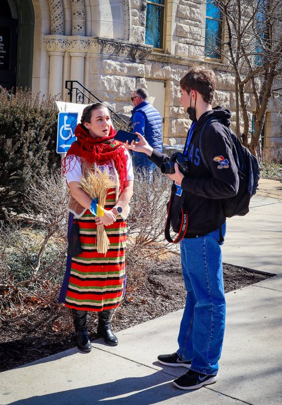

About Me
Hi there! I’m Matthew Petillo. I’m a junior double majoring in Computer Science and Journalism at the University of Kansas. I’m currently the Editor-In-Chief for the University Daily Kansan, the student newspaper at KU.
I’ve been working in student papers for years – first in middle school as an opinion writer, and then in high school as a reporter. I got my professional start working for Lawrence Business Magazine, a local trade publication. When I came to KU, I knew I was going to work for the student paper – because I love doing the news.
Other then that, I currently work with Professor Alex Bardas, a professor in the Electrical Engineering and Computer Science department at the School of Engineering, in his lab. My goal is to find the intersection of computers and journalism, and build tools for journalists to use to make their reporting better.